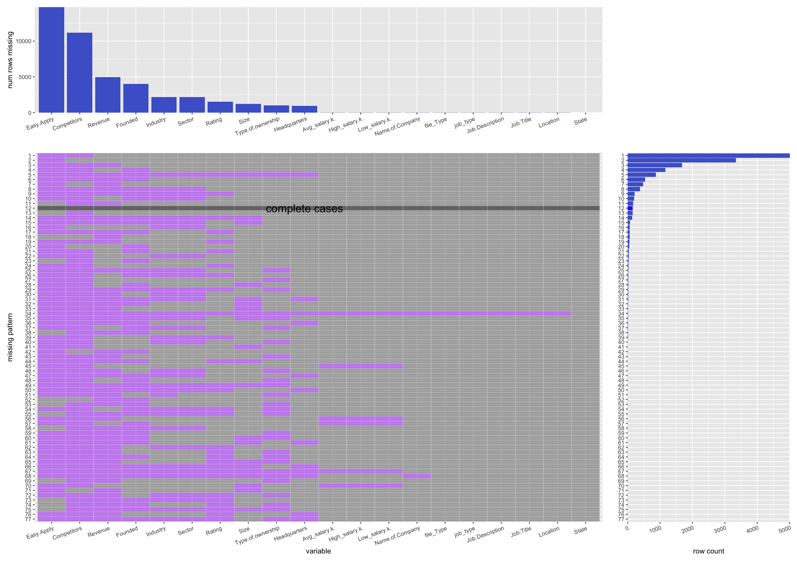

Chapter 4 Missing values
4.1 missing value by column:
## Easy Apply Competitors Revenue
## 14746 11177 4965
## Founded Industry Sector
## 4004 2174 2171
## Rating Size Type of ownership
## 1515 1204 1031
## Headquarters Low_salary(k) High_salary(k)
## 931 25 25
## Avg_salary(k) Name of Company Job Title
## 25 15 13
## Job Description Location file_Type
## 13 13 13
## job_type State
## 13 0For each columns, their number of missing values are show below. As we can see from the form, most of the values under “easy apply” and “competitor” labels are missing. That means we should avoid to investigate the relation of salary and these two features. Among all features, “Sectors”, “Industry”, and “number of employees” are least missing values. Thus, we want to investigate more about relations of these features and salary level.
4.2 display first ten company
The following missing pattern graph shows the pattern of missing values. Blue represents data that are missing, while gray represents data that are not missing. We can find out from the map that “revenue”, “competitors”, and “year founded” have most missing value in the dataset. Besides this, we also find out that there is no correlation between features that are missing, that is, no feature leads to other features’ data missing. Therefore, we can investigate each feature without being intervened by other feature’s missing data.
4.3 use mi library draw heatmap and check missing value
This heat map gives the missing date of each features. As we can see from the map, “competitors”, “revenues” and “founded years” are missing in a massive amount. So we avoid to do studies on these data.
## NOTE: The following pairs of variables appear to have the same missingness pattern.
## Please verify whether they are in fact logically distinct variables.
## [,1] [,2]
## [1,] "Job Title" "Job Description"
## [2,] "Job Title" "Location"
## [3,] "Job Title" "file_Type"
## [4,] "Job Title" "job_type"
## [5,] "Job Description" "Location"
## [6,] "Job Description" "file_Type"
## [7,] "Job Description" "job_type"
## [8,] "Location" "file_Type"
## [9,] "Location" "job_type"
## [10,] "file_Type" "job_type"
## [11,] "Low_salary(k)" "High_salary(k)"
## [12,] "Low_salary(k)" "Avg_salary(k)"
## [13,] "High_salary(k)" "Avg_salary(k)"
This table displays 63 missing patterns.
## [1] "nothing"
## [2] "Competitors"
## [3] "Revenue"
## [4] "Founded"
## [5] "Revenue, Competitors"
## [6] "Founded, Competitors"
## [7] "Size, Competitors"
## [8] "Industry, Sector"
## [9] "Founded, Revenue"
## [10] "Type.of.ownership, Competitors"
## [11] "Rating, Competitors"
## [12] "Size, Revenue"
## [13] "Founded, Revenue, Competitors"
## [14] "Industry, Sector, Competitors"
## [15] "Size, Founded, Competitors"
## [16] "Rating, Founded, Competitors"
## [17] "Rating, Revenue, Competitors"
## [18] "Size, Revenue, Competitors"
## [19] "Type.of.ownership, Revenue, Competitors"
## [20] "Founded, Type.of.ownership, Competitors"
## [21] "Founded, Industry, Sector, Competitors"
## [22] "Size, Founded, Revenue, Competitors"
## [23] "Rating, Industry, Sector, Competitors"
## [24] "Rating, Founded, Revenue, Competitors"
## [25] "Type.of.ownership, Industry, Sector, Competitors"
## [26] "Industry, Sector, Revenue, Competitors"
## [27] "Headquarters, Founded, Revenue, Competitors"
## [28] "Founded, Type.of.ownership, Revenue, Competitors"
## [29] "Competitors, Low_salary.k., High_salary.k., Avg_salary.k."
## [30] "Rating, Headquarters, Revenue, Competitors"
## [31] "Rating, Type.of.ownership, Revenue, Competitors"
## [32] "Type.of.ownership, Industry, Revenue, Competitors"
## [33] "Founded, Industry, Sector, Revenue, Competitors"
## [34] "Rating, Founded, Industry, Sector, Competitors"
## [35] "Rating, Founded, Type.of.ownership, Revenue, Competitors"
## [36] "Rating, Size, Founded, Revenue, Competitors"
## [37] "Rating, Industry, Sector, Revenue, Competitors"
## [38] "Founded, Type.of.ownership, Industry, Sector, Competitors"
## [39] "Size, Founded, Type.of.ownership, Revenue, Competitors"
## [40] "Type.of.ownership, Industry, Sector, Revenue, Competitors"
## [41] "Founded, Competitors, Low_salary.k., High_salary.k., Avg_salary.k."
## [42] "Revenue, Competitors, Low_salary.k., High_salary.k., Avg_salary.k."
## [43] "Size, Competitors, Low_salary.k., High_salary.k., Avg_salary.k."
## [44] "Headquarters, Size, Founded, Revenue, Competitors"
## [45] "Rating, Size, Type.of.ownership, Revenue, Competitors"
## [46] "Rating, Founded, Industry, Sector, Revenue, Competitors"
## [47] "Size, Founded, Industry, Sector, Revenue, Competitors"
## [48] "Rating, Founded, Type.of.ownership, Industry, Sector, Competitors"
## [49] "Founded, Type.of.ownership, Industry, Sector, Revenue, Competitors"
## [50] "Headquarters, Founded, Industry, Sector, Revenue, Competitors"
## [51] "Rating, Type.of.ownership, Industry, Sector, Revenue, Competitors"
## [52] "Rating, Size, Founded, Industry, Sector, Revenue, Competitors"
## [53] "Rating, Founded, Type.of.ownership, Industry, Sector, Revenue, Competitors"
## [54] "Headquarters, Size, Founded, Industry, Sector, Revenue, Competitors"
## [55] "Size, Founded, Type.of.ownership, Industry, Sector, Revenue, Competitors"
## [56] "Rating, Headquarters, Founded, Industry, Sector, Revenue, Competitors"
## [57] "Rating, Size, Founded, Type.of.ownership, Industry, Sector, Revenue, Competitors"
## [58] "Rating, Headquarters, Founded, Type.of.ownership, Industry, Sector, Revenue, Competitors"
## [59] "Rating, Headquarters, Size, Founded, Industry, Sector, Revenue, Competitors"
## [60] "Rating, Headquarters, Size, Founded, Type.of.ownership, Industry, Sector, Revenue, Competitors"
## [61] "Rating, Name.of.Company, Headquarters, Size, Founded, Type.of.ownership, Industry, Sector, Revenue, Competitors"
## [62] "Rating, Headquarters, Size, Founded, Type.of.ownership, Industry, Sector, Revenue, Competitors, Low_salary.k., High_salary.k., Avg_salary.k."
## [63] "Job.Title, Job.Description, Rating, Name.of.Company, Location, Headquarters, Size, Founded, Type.of.ownership, Industry, Sector, Revenue, Competitors, file_Type, job_type, Low_salary.k., High_salary.k., Avg_salary.k."This table displays missing patterns and how many time it appears.
## nothing
## 3496
## Competitors
## 5160
## Revenue
## 541
## Founded
## 49
## Revenue, Competitors
## 1849
## Founded, Competitors
## 1194
## Size, Competitors
## 8
## Industry, Sector
## 68
## Founded, Revenue
## 10
## Type.of.ownership, Competitors
## 22
## Rating, Competitors
## 28
## Size, Revenue
## 1
## Founded, Revenue, Competitors
## 550
## Industry, Sector, Competitors
## 31
## Size, Founded, Competitors
## 22
## Rating, Founded, Competitors
## 32
## Rating, Revenue, Competitors
## 55
## Size, Revenue, Competitors
## 13
## Type.of.ownership, Revenue, Competitors
## 7
## Founded, Type.of.ownership, Competitors
## 4
## Founded, Industry, Sector, Competitors
## 200
## Size, Founded, Revenue, Competitors
## 14
## Rating, Industry, Sector, Competitors
## 10
## Rating, Founded, Revenue, Competitors
## 68
## Type.of.ownership, Industry, Sector, Competitors
## 8
## Industry, Sector, Revenue, Competitors
## 17
## Headquarters, Founded, Revenue, Competitors
## 12
## Founded, Type.of.ownership, Revenue, Competitors
## 5
## Competitors, Low_salary.k., High_salary.k., Avg_salary.k.
## 5
## Rating, Headquarters, Revenue, Competitors
## 1
## Rating, Type.of.ownership, Revenue, Competitors
## 2
## Type.of.ownership, Industry, Revenue, Competitors
## 3
## Founded, Industry, Sector, Revenue, Competitors
## 384
## Rating, Founded, Industry, Sector, Competitors
## 23
## Rating, Founded, Type.of.ownership, Revenue, Competitors
## 3
## Rating, Size, Founded, Revenue, Competitors
## 6
## Rating, Industry, Sector, Revenue, Competitors
## 2
## Founded, Type.of.ownership, Industry, Sector, Competitors
## 11
## Size, Founded, Type.of.ownership, Revenue, Competitors
## 2
## Type.of.ownership, Industry, Sector, Revenue, Competitors
## 5
## Founded, Competitors, Low_salary.k., High_salary.k., Avg_salary.k.
## 2
## Revenue, Competitors, Low_salary.k., High_salary.k., Avg_salary.k.
## 2
## Size, Competitors, Low_salary.k., High_salary.k., Avg_salary.k.
## 1
## Headquarters, Size, Founded, Revenue, Competitors
## 2
## Rating, Size, Type.of.ownership, Revenue, Competitors
## 2
## Rating, Founded, Industry, Sector, Revenue, Competitors
## 217
## Size, Founded, Industry, Sector, Revenue, Competitors
## 72
## Rating, Founded, Type.of.ownership, Industry, Sector, Competitors
## 3
## Founded, Type.of.ownership, Industry, Sector, Revenue, Competitors
## 23
## Headquarters, Founded, Industry, Sector, Revenue, Competitors
## 5
## Rating, Type.of.ownership, Industry, Sector, Revenue, Competitors
## 1
## Rating, Size, Founded, Industry, Sector, Revenue, Competitors
## 138
## Rating, Founded, Type.of.ownership, Industry, Sector, Revenue, Competitors
## 25
## Headquarters, Size, Founded, Industry, Sector, Revenue, Competitors
## 17
## Size, Founded, Type.of.ownership, Industry, Sector, Revenue, Competitors
## 12
## Rating, Headquarters, Founded, Industry, Sector, Revenue, Competitors
## 4
## Rating, Size, Founded, Type.of.ownership, Industry, Sector, Revenue, Competitors
## 5
## Rating, Headquarters, Founded, Type.of.ownership, Industry, Sector, Revenue, Competitors
## 1
## Rating, Headquarters, Size, Founded, Industry, Sector, Revenue, Competitors
## 2
## Rating, Headquarters, Size, Founded, Type.of.ownership, Industry, Sector, Revenue, Competitors
## 870
## Rating, Name.of.Company, Headquarters, Size, Founded, Type.of.ownership, Industry, Sector, Revenue, Competitors
## 2
## Rating, Headquarters, Size, Founded, Type.of.ownership, Industry, Sector, Revenue, Competitors, Low_salary.k., High_salary.k., Avg_salary.k.
## 2
## Job.Title, Job.Description, Rating, Name.of.Company, Location, Headquarters, Size, Founded, Type.of.ownership, Industry, Sector, Revenue, Competitors, file_Type, job_type, Low_salary.k., High_salary.k., Avg_salary.k.
## 134.4 Missing pattern plot
4.4.1 display with percentage
4.4.2 display with count number

The most frequent missing pattern is the pattern where ‘Easy.apply’ and ‘Competitors’ are both missing, while the other variables are not. Moreover, ‘Easy.apply’ and ‘Competitors’ are more likely to be missing in the dataset than the other variables. While other values are missing, the values of Company.name, index, Job.Description, Job.Title, Location, Salary.Estimate, and X are all presenting in the dataset.
The features Industry and Sector seem to be missing at the same time.
The feature Founded seems to be an independent feature, its representing doesn’t effect other feature’s status.
Complete cases only appears less than 100 rows while there are more than 2000 rows of data in the set.